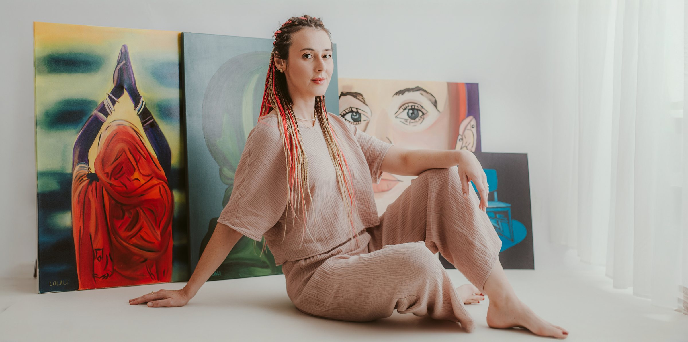
Moja Historia
„Jeżeli chociaż jedna myśl, albo jedno słowo Cię zainspiruje, to warto było to wszystko spisać. Wszystko warto, bo popatrz, wciąż żyję.”
— ze wstępu do książki
Moja Historia
O Mnie
Cześć,
nazywam się Ola, mam 33 lata, jestem lekarką, a od dwóch lat również pacjentką onkologiczną. Niespełna rok temu przeszczepiono mi wątrobę od żywego dawcy, a także niespodziewanie stałam się pisarką.
Zanim zachorowałam byłam oddana swoim małym pacjentom w stu procentach. Byłam szczęśliwa i spełniona. Nie potrzebowałam niczego więcej, pragnęłam aby tak wyglądało moje życie, wypełnione pracą i pasjami do sportu i nauki języków.
Jednak stało się inaczej. Wydawać by się mogło, że moje życie zakończyło się 23 lutego 2023 roku. Wtedy zapadł na mnie wyrok śmierci.
Maksymalnie 3 miesiące – usłyszałam.
Zdiagnozowano u mnie straszliwy nowotwór, który sieje ogromne spustoszenie wśród zapadających na niego pacjentów. Rak dróg żółciowych, CCC, Cholangiocarcinoma. Nieuleczalny. Roku od diagnozy nie przeżywa prawie nikt. Jak to mogło przytrafić się mnie?
Zdrowa, młoda, wysportowana, bez żadnych objawów? To chyba jakiś żart. Nie żartował nikt. Umierałam. Nie było żadnej nadziei, żadnego ratunku.
Nie poddałam się i walczyłam z całych sił o każdy dzień, o każdą najdrobniejszą możliwość leczenia i swój ratunek odnalazłam w kraju 3 świata, w Indiach. Tam poddałam się procedurom medycznym które były niesamowicie ryzykowne, ale finalnie podarowały mi drugie życie. Przeszłam dwa zabiegi radioembolizacji oraz przeszczep wątroby. Byłam bliska śmierci, lecz przeżyłam.
Jestem tutaj już 24 miesiące od momentu otrzymania wyroku i jak na razie nigdzie się nie wybieram. Obecnie, jako jedna z niewielu na świecie mogę nazywać siebie wolną od tego straszliwego nowotworu jakim jest rak dróg żółciowych. Wszyscy, których znałam i zachorowali ze mną już nie żyją.
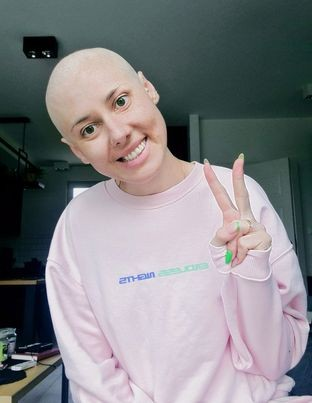
Szczerze? Ja też myślałam, że nie dożyję wydania tej książki, jednak dziś mogę trzymać ją w ręku. To niesamowite.
Pragnę podzielić się z Tobą moją historią, bo gdy wesprę lub pomogę choć jednej osobie, uznam moją misję za zakończoną. Bo po coś przeżyłam, prawda?
Zapraszam Cię do mojego świata.
Już nie mogę się doczekać naszego spotkania.
O Mnie
Zdjęcia
-
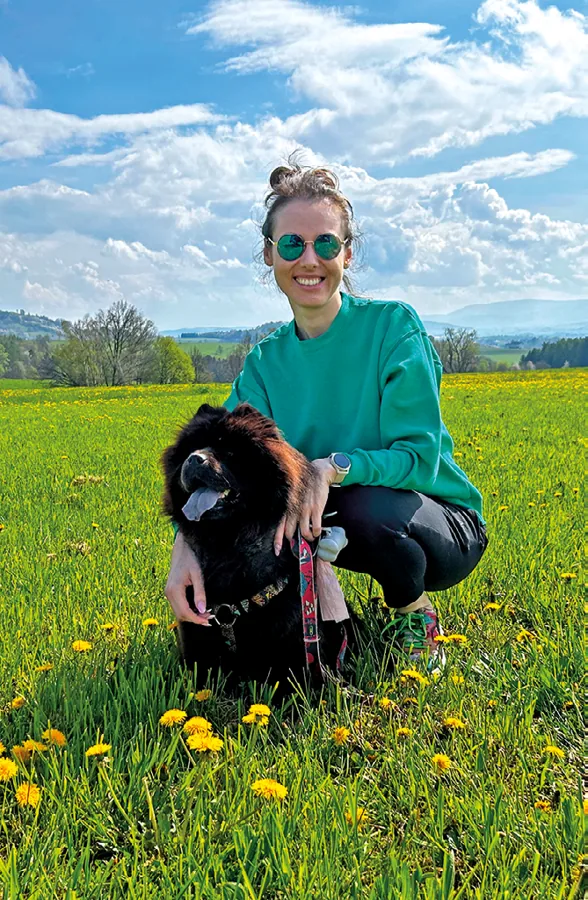
Z Klarą -
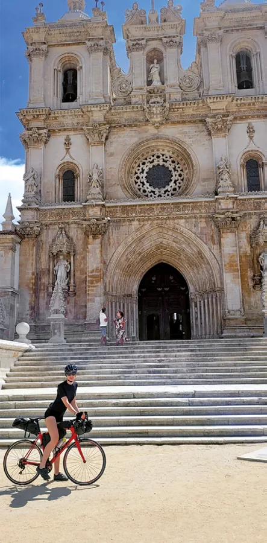
Ukochany rower -
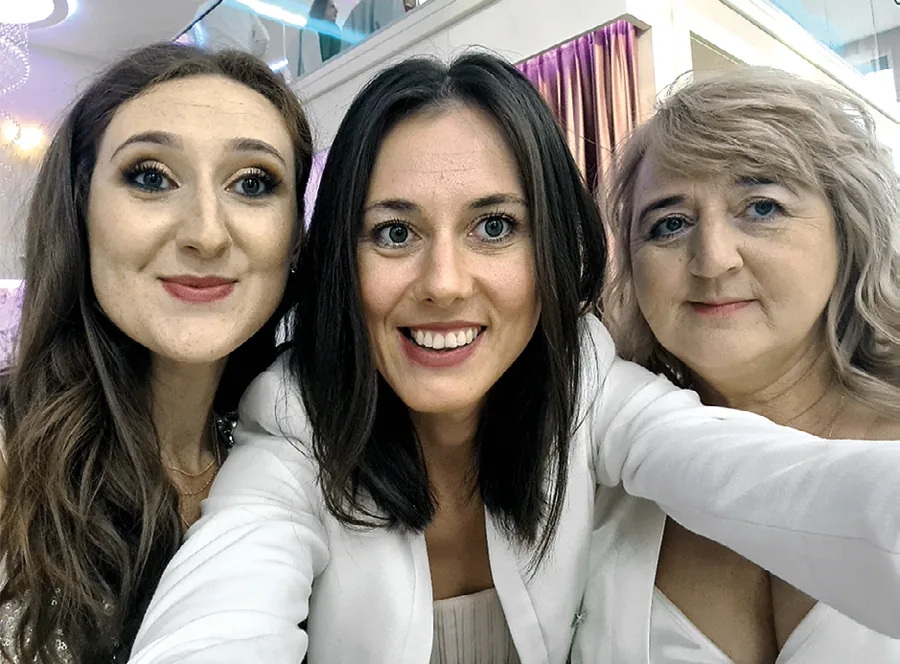
Ja, Mama i Młoda -
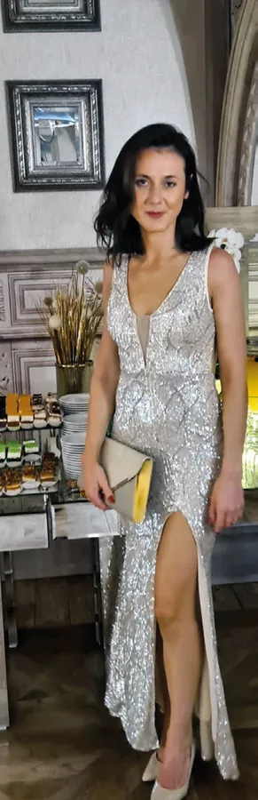
Kilka miesięcy przed zachorowaniem -
W pracy -
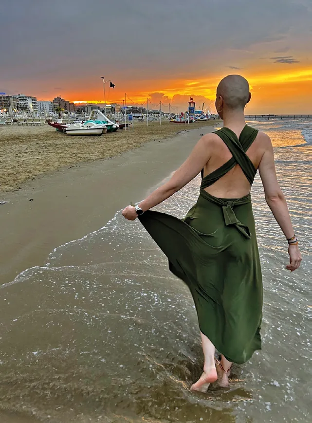
Podczas chemioterapii -
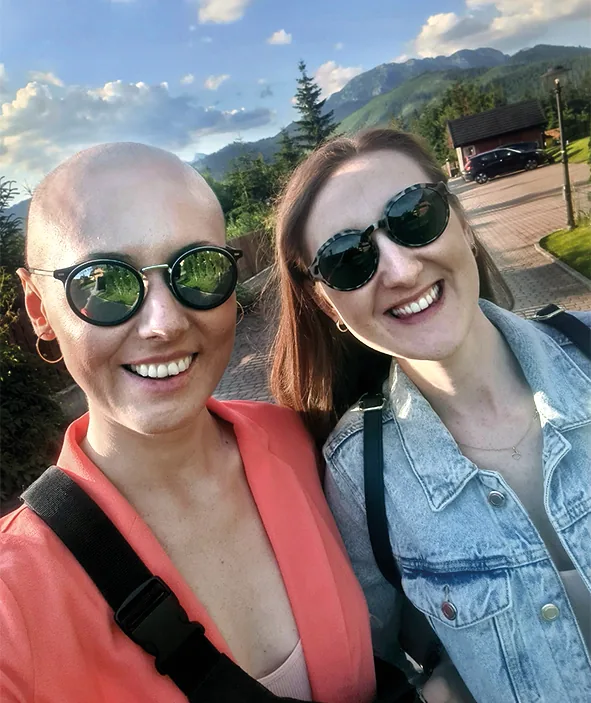
Podczas chemioterapii -
Indie -
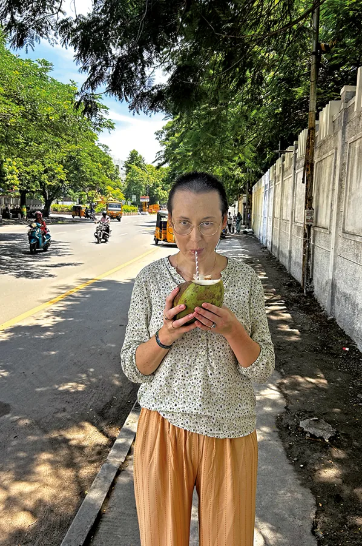
Indie
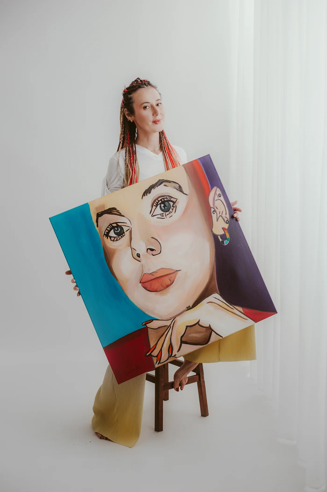
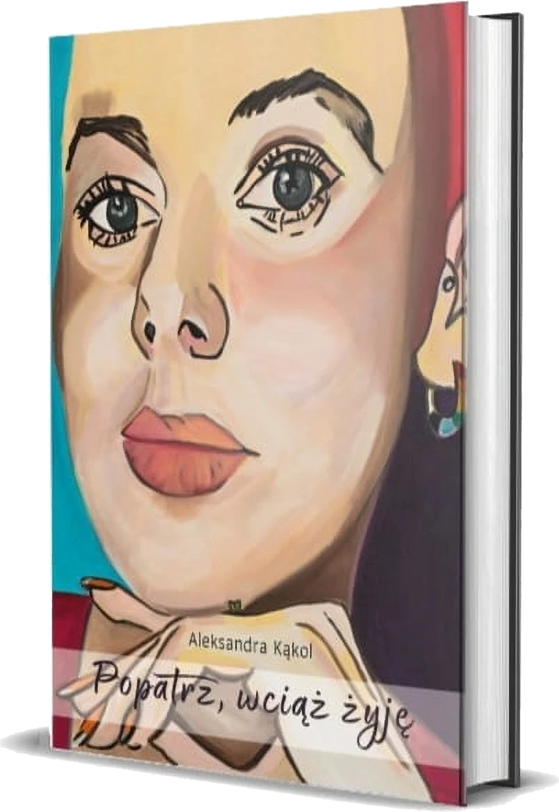
Książka
Popatrz, wciąż żyję
Ta książka nigdy nie miała powstać, gdyż nie jestem pisarką, lecz – lekarką. Jednak moje życie stało się materiałem na książkę.
Stanęłam do nierównej walki ze straszliwą chorobą. I wygrałam. A ratunek otrzymałam w Indiach. Jeżeli potrzebujesz wsparcia, pomocy, pocieszenia, ale też chcesz poznać historię o niezłomności i nadziei, to zapraszam. Będzie mi bardzo miło.
Więcej o książceKsiążka
Z książki
-
WstępUrodziłam się na nowo 26 lutego 2024 roku. Otrzymałam nową wątrobę i nowe życie.
-
Rozdział 1Pomyśl tylko: z trzech miesięcy zrobiło się trzynaście. Czy to już nie wielka sprawa? Czy nie warto było walczyć chociaż o ten czas?
-
WstępW tym monologu nie będzie przepraszania, już przepraszałam, że żyję. Nigdy więcej.
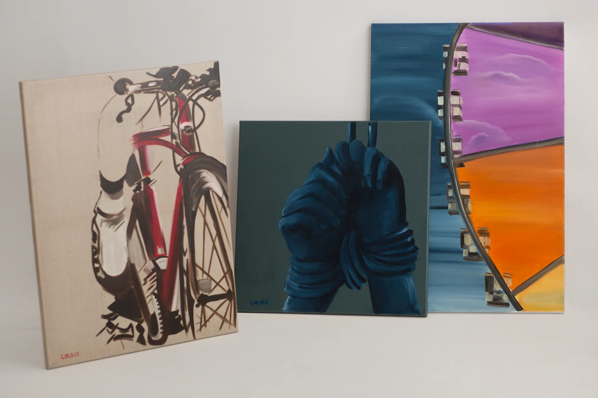
Przestałam pytać: „Dlaczego”.
Teraz pytam: „Po co?”.
— Posłowie
Książka
Obrazy
Obrazy: Aleksandra Rydzyńska-Listoś
-
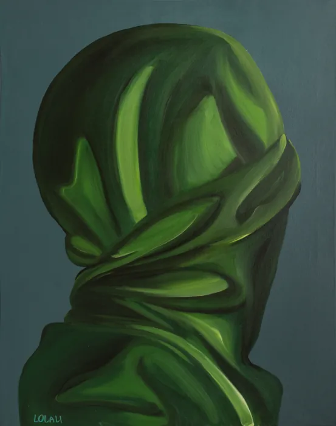
IZielona sukienka -
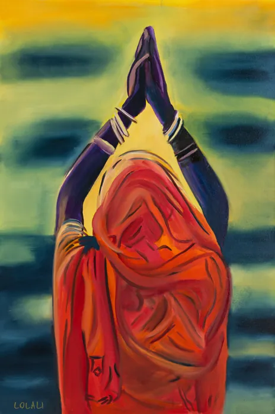
IIModlitwa nad Gangesem -
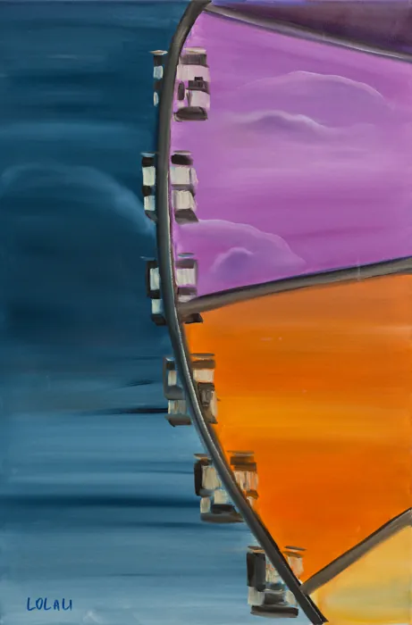
IIINa karuzeli -
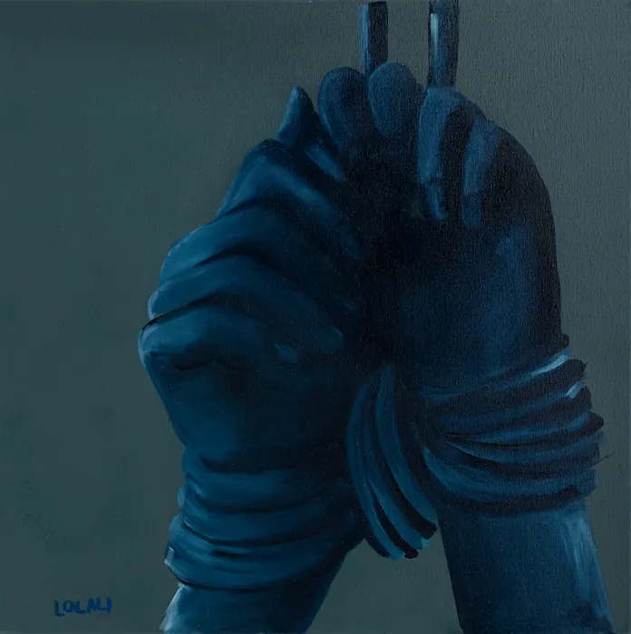
IVBez tytułu -
VSzach mat -
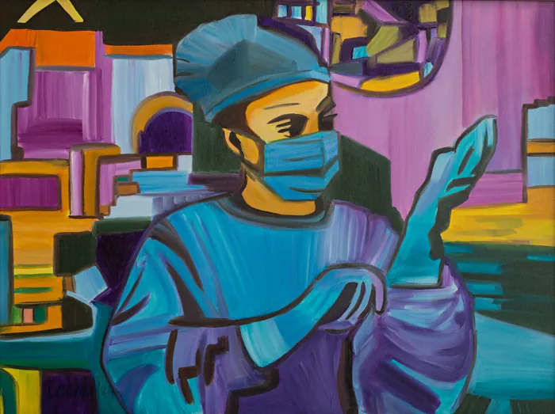
VIOperacja -
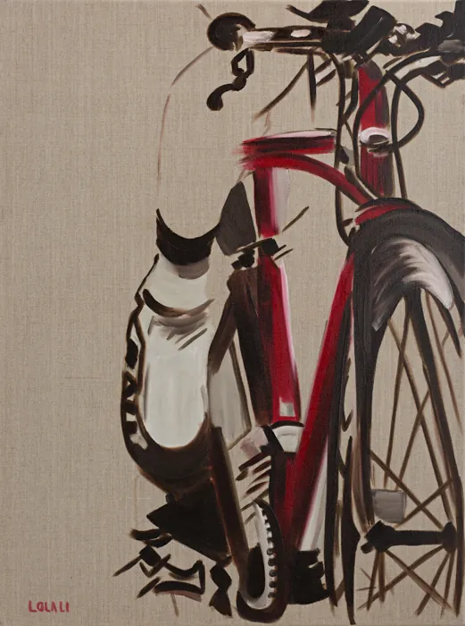
VIICzerwony rower -
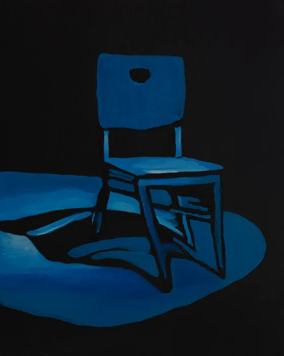
VIIIU Pana Boga w poczekalni
{kind=link}
{kind=link}
{kind=link}
{kind=link}
{kind=link}
{kind=link}
{kind=link}
{kind=link}
Prasa
W Mediach
-
Medonet.pl"Proszę pani, rok to byłby cud — usłyszała — pani nie przeżyje trzech miesięcy". Poznajcie historię Oli, młodej lekarki, i jej walki z rakiem dróg żółciowych, który nigdy nie dał objawów.
-
WP.PLAleksandra Kąkol, 33-letnia lekarka pokonała wyjątkowo rzadkiego i fatalnie rokującego raka, a dziś stała się głosem pacjentów z rakiem dróg żółciowych.
-
europacolonpolska.plMoja historia jako jedna z nielicznych ma optymistyczne zakończenie. Natomiast wiele osób w Polsce z rakiem dróg żółciowych jest na terminalnej drodze i nie ma szans na nowoczesne leczenie.